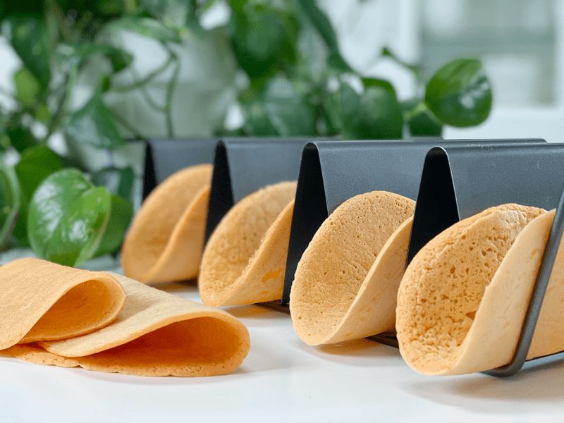
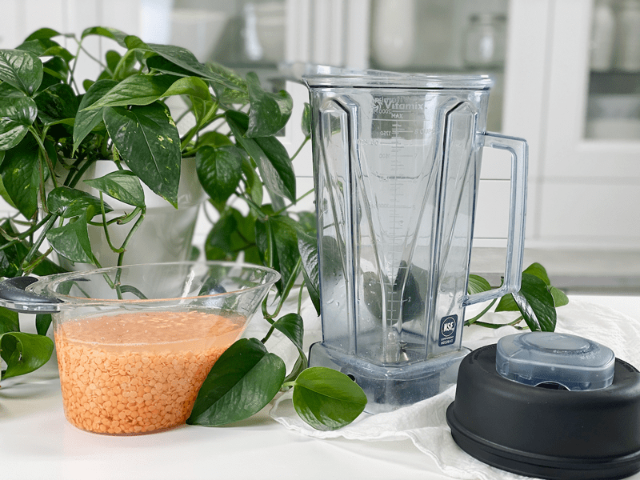
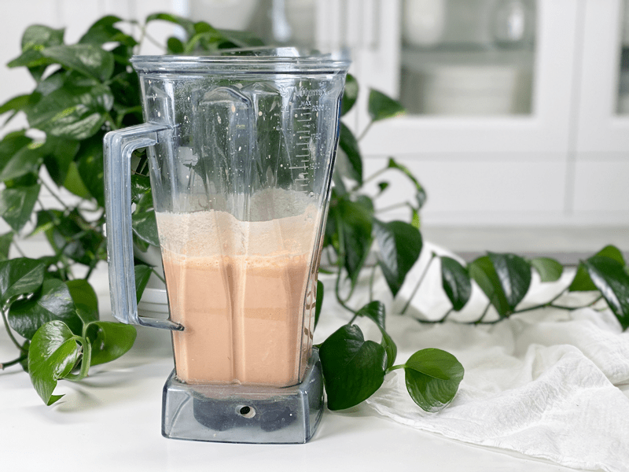
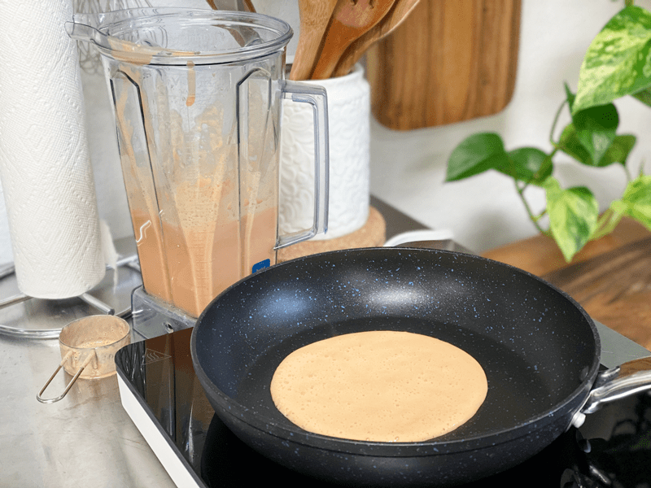

Red Lentil Wraps | Cooked | Oil-Free

When it comes to wraps, I love having options. They all come with different characteristics: size, flexibility, color, and flavor. Some are based in nuts, oats, rice, lentils, sweet potatoes — you name it. Another benefit with wrap options is the nutritional profile they have to offer. In a well-balanced diet, we need to eat a variety of foods to get a variety of nutrients. I wrote a post called Where and How Do I Get All My Nutrients? I recommend giving it a read. Today’s recipe is based in red lentils.

Lentils are inexpensive, highly nutritious edible legumes. They are a small round lens-shaped legume that comes in various textures, tastes, and colors like green, brown, black, yellow, and red. Among lentils, red lentils have a distinct, sweet flavor. They are an excellent source of fiber, protein, B-vitamins, and iron. With all of these wonderful attributes, you can sink your teeth into these wraps with great satisfaction.
What to Expect from This Wrap
- They will look and feel delicate, but they are actually pretty darn strong, making them willing and able to hold any filling you choose.
- As far as color, they will be a pale orange (like sherbet) on one side, and a bit darker on the reverse. I have seen other people post pictures and they are cream-colored. Hmm, not sure how they achieved that.
- I always smell the food I am cooking (habit). This recipe won’t fill the air with an aroma, so I lifted the cooked wrap right up to the nose, and much to my surprise, it reminded me of cantaloupe. I thought my sniffer broke, so I tested a few of them and yep, to me, that’s exactly what they smell like. (shrugs).
- Texturally, they are more on the spongy side and remain pliable.
- The wraps don’t offer much in the line of flavor, which may or may not be desirable. Often, we lean on the fillings to give us a punch of flavor. If you wish, you can add spices or herbs to the batter.
Tips and Techniques
The Pan
- You can use a well-seasoned cast-iron pan, a non-stick pan, or a griddle.
- If you don’t have a good non-stick surface, you will want to brush a thin coat of oil on it so the wrap doesn’t stick.
- I used an 11″ non-stick pan and I can comfortably make a 6″ wrap. I tried to make a large one, but due to the interfering sides of the pan, I couldn’t flip it without disrupting the aesthetics of the wrap.
- If you wish to use a griddle (like when cooking pancakes), you will be able to cook multiple wraps at once (size-dependent). Since griddles are stationary, you will need to spread the batter with the back of a spoon/ladle to the desired size.
Heat Setting
- I found that my induction burner (which I use in the studio) needs to be turned up a bit hotter than the stove in the house. Stove tops run at different heat levels.
- The key is getting the temperature to the right level where it doesn’t crisp up the edges and leave you with uncooked centers. If you experience this, turn the heat down a little.
Flipping the Wrap
- There is a sweet spot for flipping. Don’t worry if you mess up the first one that you make–I did! It’s part of the learning curve.
- The main thing is to make sure that you let the wrap cook long enough before flipping. It will bubble like pancake batter, and the edges will set.
- After about 90 seconds, slide the spatula under the edge and follow the circle, loosening the edges. If at any point batter sticks to the spatula, withdraw it, step back quietly, and take a few breaths. It needs to cook longer.
They are very pliable, so bend, fold, or roll them will your favorite fillings or just use them as a tasty sponge to mop up curries and sauces. I hope you enjoy this simple recipe. Please leave a comment below. Blessings, amie sue
Ingredients
Yields 10 (1/4 cup measurement each)
- 1 cup red lentils
- 2 cups water
- 1/2 tsp sea salt
Preparation
- Soak the lentils in the water, along with the salt for 3-12 hours ( I’m giving you some wiggle room based on your schedule)
- DO NOT DRAIN THE LENTILS.
- Pour the soaked lentils (along with water) and salt into a blender and blend until creamy.
- The batter will appear somewhat fluffy once fully blended.
- Heat a nonstick skillet over medium heat (no hotter).
- If the heat is too high, the wraps will cook unevenly, leaving you with crispy edges and soggy middles.
- You can use a griddle, but since it can’t be picked up, you will need to spread the batter with the back of a metal spoon to a 6-inch circle.
- Ladle 1/4 cup of batter to the center of the pan and swirl into a nice circle.
- When the batter rests, the ground lentils sink to the bottom and collect around the blades. To ensure the lentil batter remains an even consistency, stir the batter before pouring.
- You can make larger wraps by using 1/2 cup of batter, but they take a little practice to flip, since they are twice the size.
- Cook until bubbles pop in batter, similar to cooking pancakes, for roughly 1-2 minutes. Flip and cook for 1 minute longer.
- If you try getting the spatula under the wrap but it sticks, cook it a bit longer. The spatula should slide under it easily.
- Transfer to a cooling rack while you repeat the process.
- The wraps are delicious cold but can be reheated on a tray in the oven.
Storing Wraps
- They are best served warm right after cooking.
- To store for later use, layer pieces of parchment paper between each wrap in an airtight container.
- They can be stored in the refrigerator for 5-6 days or in the freezer for 2-3 months.
- When ready to use stored wraps, allow them to come to room temperature, then reheat briefly on a warm skillet.
-

-
Soak the lentils in water for 3+ hours.
-

-
Pour the lentils, soaking water, and salt into the blender. Blend until creamy.
-

-
Pour 1/4 cup of batter to a preheated non-stick pan. Cook for 90 seconds or until you can slide the spatula under it.
-
-
The batter will bubble like pancake batter. Once flipped, cook for an additional 30-60 seconds.
© AmieSue.com